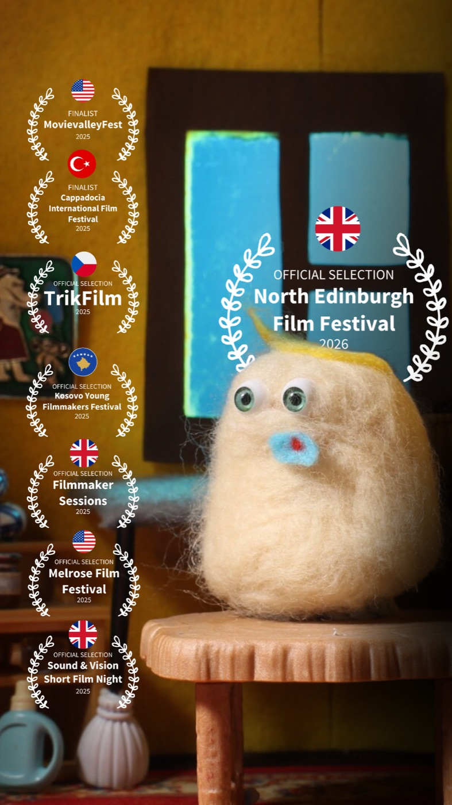
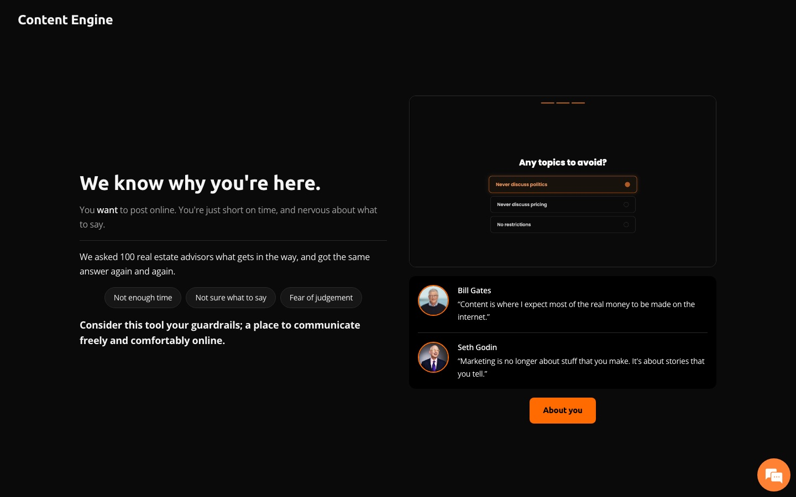
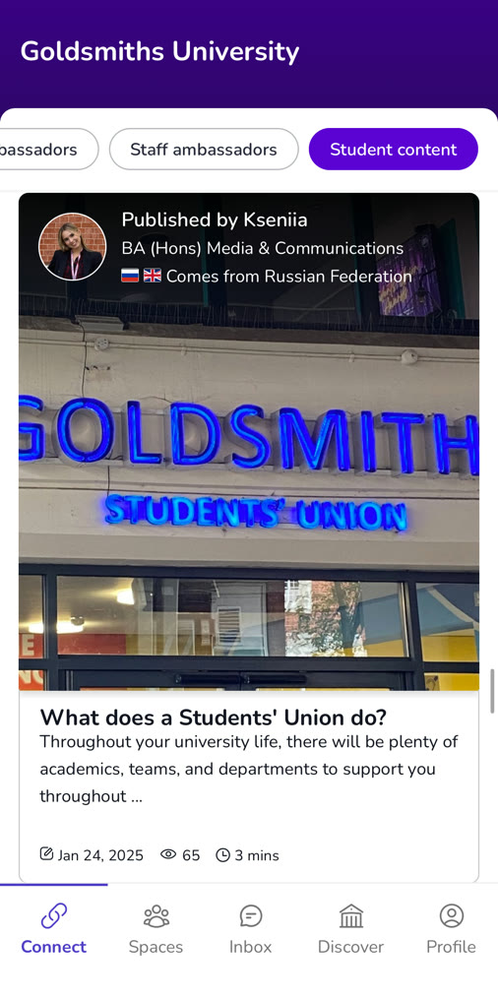
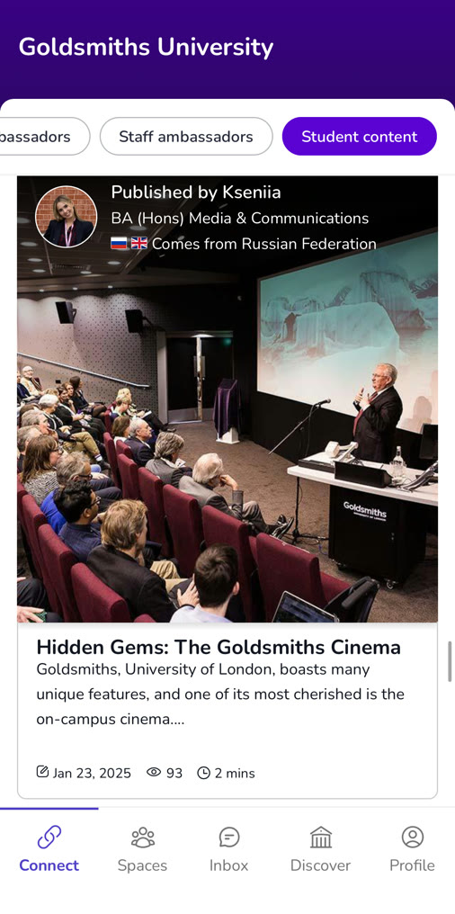

Fourth Wall, 2025
Final degree film. Stop motion shot in Dragonframe, with handmade sets and characters. Effects and edit in After Effects and Premiere Pro. Made solo, from build to final cut.
Final degree film. Stop motion shot in Dragonframe, with handmade sets and characters. Effects and edit in After Effects and Premiere Pro. Made solo, from build to final cut.

Fourth Wall has screened from Edinburgh to Cappadocia. 8 festivals. 5 countries. 3 finalist places.
Animatic for Fourth Wall. I drew and timed every shot in After Effects, then built the sets and shot the stop motion in Dragonframe from that cut.
2,750 frames, each shot by hand in Dragonframe. 62 days in a row in the studio, 12 hours a day. The set took 5kg of wool, needle felted together inside an Amazon box.
Logo animation for a short commercial brief. Produced on placement with YLLW Studios. Illustrator, Photoshop, After Effects.
Final placement project with YLLW Studios, made for a competitive brief. Original illustration in Illustrator, animated in After Effects.
Animated GIFs for email signatures. Produced on placement with YLLW Studios. Illustrator, Photoshop, After Effects.

AI social media content tool for real estate advisors, powered by the Anthropic API. I designed and built it myself using AI coding tools, from bespoke UI to frontend and backend code.
Live at advsr.ai/content-engine
An end to end rebrand on WordPress. New brand identity and site copy, plus extra modules and plugins to amplify user engagement.
Live at saltandslate.co.uk


Web editing on the Unibuddy platform, managed through third party apps.